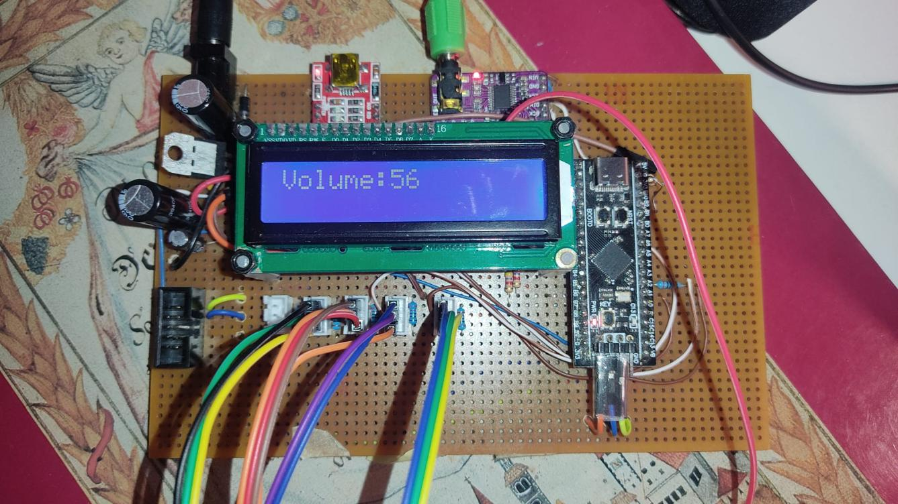

AI Automation Engineer Intern
Developed lead-research automation using n8n, Django and Selenium; contributed to EV charging-site analysis with Overpass API and OpenRouteService; evaluated speech-to-text systems using LangChain and Langfuse.
Embedded systems & software development
I’m a Computer Engineering master’s student at the University of Rijeka. I build embedded firmware, real-time digital audio systems and software that connects data, automation and useful interfaces.

The systems, engineering decisions and measured results behind my work.
Loading projects…
Engineering experience across workflow automation, AI evaluation, geospatial systems and interactive software.
Developed lead-research automation using n8n, Django and Selenium; contributed to EV charging-site analysis with Overpass API and OpenRouteService; evaluated speech-to-text systems using LangChain and Langfuse.
Developed a visual novel in Godot and tested a Laravel-based HR platform.
Technologies used in the work above.
C on STM32 / ARM Cortex-M4, DMA, UART, I2S, I2C, ADC, real-time audio signal processing and oscilloscope validation.
Python, Django, n8n, LangGraph/LangChain, Langfuse, Selenium, API integration and React / JavaScript interfaces.
Computer Engineering master’s studies (in progress). Bachelor’s thesis (2026): Sound Synthesizer Implemented on an STM32 Microcontroller.
Open to embedded systems, firmware and software engineering opportunities.